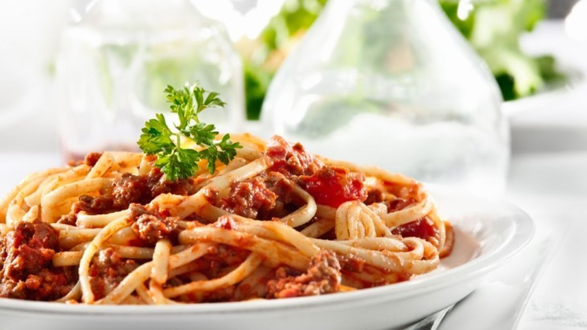

SPAGHETTI
by Giovanni

Description:
This Easy Spaghetti Recipe is ready in just 15 minutes and is a hearty, comforting meal during cooler months.
Pair with a side salad or steamed veggies for a full meal and enjoy!
INGREDIENTS
- One 12-ounce box Barilla® Pronto® Half-Cut Spaghetti.
- Oinch salt, optional to taste.
- 1 pound ground beef or ground sirloin.
- One 24-ounce jar Barilla® Tomato and Basil Sauce or your favorite sauce.
- Finely chopped fresh basil for garnishing, optional.
- Freshly grated Parmesan cheese for garnishing, optional.
INSTRUCTIONS
- To a large pan, add the pasta, cover with 3 cups cold water, optional salt to taste, and boil over high heat until water has absorbed, about 10 minutes, but watch your pasta and cook as needed until al dente. While pasta boils, brown the ground beef.
- To a large skillet, add the ground beef and cook over medium-high heat, breaking up the meat with a spatula as it cooks to ensure even cooking.
- After beef has cooked through, add the pasta sauce, stir to combine, and cook for 1 to 2 minutes, or until heated through.
- After pasta has cooked for about 10 minutes, or until all the water has been absorbed, add the sauce over the pasta and toss to combine in the skillet or alternatively plate the pasta and add sauce to each individual plate as desired.
- Optionally garnish with basil and Parmesan to taste and serve immediately. Pasta and sauce are best warm and fresh but extra will keep airtight in the fridge for up to 5 days.
Developed by: Lucas Freire
The Odin Project